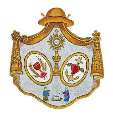
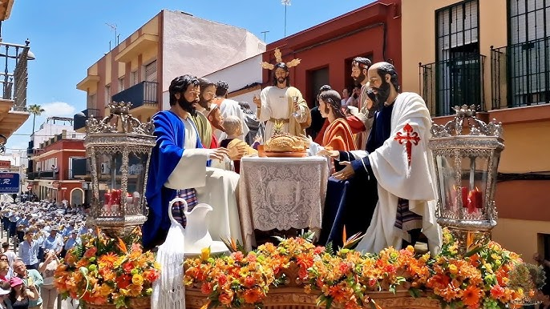

La Cena
Parroquia Ntra. Sra. Del Amparo y San Fernando C/ La Hacendita, 36
Hermandad Sacramental de la Sagrada Cena, Jesús Humillado y Nuestra Señora del Amparo y Esperanza

Numero de hermanos
540
Nazarenos
200
Autores
Nuestro Señor de la Sagrada Cena es obra de Miguel Bejarano Moreno (1994), autor también del apostolado. Jesús Humillado es obra de Miguel Bejarano Moreno (1995). Nuestra Señora del Amparo y Esperanza es obra de Miguel Bejarano Moreno (1994).
Capataces
Jose María Muñoz en el Misterio, José Manuel Pedrera en Jesús Humillado y Samuel Peregrina Pérez en el Palio
Música
A.M. Nuestra Señora de Valme en el Misterio, Capilla Musical Laudate Dominum junto con la Escolanía Ntra. Sra. de la Compasión en el Paso de Jesús Humillado y Ciudad de Dos Hermanas en el Paso de Palio
RECORRIDO
| Hora Aprox. | Cruz de guía |
|---|---|
| 16:30 | Salida |
| -- | La Hacendita |
| -- | Isaac Peral |
| -- | Alarcón |
| -- | Estepa |
| 17:00 | Los Molares |
| -- | Las Cabezas de San Juan |
| -- | Camas |
| -- | Bogotá |
| -- | Lebrija |
| 18:00 | Velázquez |
| -- | Issac Peral |
| -- | Santo Domingo |
| 19:00 | Lope de Vega |
| -- | Botica |
| -- | Santa María Magdalena |
| -- | Plaza de la Constitución |
| 19:50 | Carrera Oficial |
| 20:00 | San Francisco |
| -- | Antonia Díaz |
| -- | Calderón de la Barca |
| -- | Francesa |
| 20:30 | Santa María Magdalena |
| 21:00 | Anibal González |
| -- | Lope de Vega |
| -- | Rivas |
| 21:30 | Beethoven |
| -- | San José |
| -- | Virgen de las Virtudes |
| 22:00 | Virgen de la Estrella |
| -- | La Hacendita |
| 22:30 | Entrada |